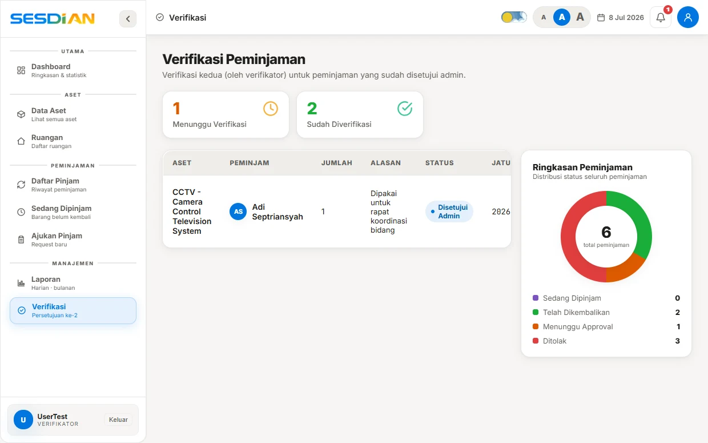

SISTEM INFORMASI
Daftar Isi
Bab I Gambaran Umum dan Metodologi Pengujian
Laporan ini mendokumentasikan pelaksanaan kegiatan pengujian sistem informasi SESDIAN (Sistem Digital Inventarisasi Aset Negara) pada Milestone M5 (Fase 5: Pengujian dan Penerapan) sesuai dengan Work Breakdown Structure (WBS) resmi proyek. Pengujian sistem dirancang untuk memastikan bahwa seluruh fungsi yang telah diselesaikan pada Sprint 1 (Akun & Katalog), Sprint 2 (Peminjaman Dua Lapis & QR), dan Sprint 3 (Inventarisasi Ruangan, Notifikasi, dan Laporan) bekerja dengan stabil, bebas cacat, aman dari manipulasi data, dan tahan terhadap kondisi ekstrem di lapangan.
Metodologi pengujian yang diterapkan mencakup empat pilar evaluasi terstruktur: pengujian kotak hitam (blackbox testing), pengujian akseptansi pengguna (user acceptance testing), pengujian keamanan aplikasi (application security testing), serta rekayasa kekacauan basis data (chaos database engineering). Pengujian dijalankan secara otomatis dan manual dengan mereplikasi beban kerja riil pada dataset 704 unit Barang Milik Negara (BMN) yang terdaftar di Balai Karantina Hewan, Ikan, dan Tumbuhan Lampung.
Seluruh skenario pengujian unit dan integrasi backend dieksekusi menggunakan test runner native Node.js (node:test) yang menjamin pengujian berjalan cepat tanpa dependensi berat pihak ketiga. Di sisi antarmuka, simulasi peramban dikendalikan melalui pustaka Playwright terotomasi untuk memeriksa alur interaksi pengguna secara menyeluruh.
Bab II Pengujian Modul dan Integrasi Sistem (SES-5.1.1)
Paket kerja SES-5.1.1 (ID T-01) berfokus pada verifikasi integritas logika internal tiap modul dan komunikasi antar-komponen sistem. Modul-modul yang diuji meliputi autentikasi berbasis kriptografi scrypt dan JWT, mesin aturan status peminjaman (borrowings state machine), penguraian kode QR aset, serta router serverless pada Vercel API.
Tabel 1 menyajikan rangkuman hasil pengujian unit dan modul yang dieksekusi pada test suite tests/auth.test.mjs dan tests/borrowings.test.mjs:
| ID Uji | Komponen & Skenario | Kriteria Keberhasilan | Status |
|---|---|---|---|
| UT-AUTH-01 | Verifikasi sandi benar vs salah | Sandi cocok lolos verifikasi, sandi keliru menghasilkan false | 100% PASS |
| UT-AUTH-02 | Pengacakan salt per-pengguna | Dua hash untuk kata sandi yang sama tidak pernah identik | 100% PASS |
| UT-AUTH-03 | Integritas tanda tangan JWT | Token sah terbaca; manipulasi muatan token ditolak seketika | 100% PASS |
| UT-BRW-01 | Persetujuan awal peminjaman | Hanya admin berhak menyetujui; status asal wajib 'pending' | 100% PASS |
| UT-BRW-02 | Verifikasi lapis kedua (serah terima) | Hanya verifikator berhak memvalidasi; status asal wajib 'approved' | 100% PASS |
| UT-BRW-03 | Pembatalan pengajuan mandiri | Peminjam berhak membatalkan sebelum serah terima barang | 100% PASS |
| UT-BRW-04 | Pencegahan transisi ilegal | Status tidak dikenal ('status-ngawur') otomatis ditolak | 100% PASS |
Berdasarkan pengujian modul, seluruh aturan transisi status peminjaman berhasil mengunci alur peminjaman dua lapis (Two-Tier Approval). Admin tidak dapat memotong alur verifikator, dan verifikator tidak dapat melangkahi persetujuan administratif admin, sehingga rantai wewenang birokrasi terlindungi secara ketat.
Bab III Pengujian Akseptansi Pengguna (UAT)
Pengujian akseptansi pengguna (User Acceptance Testing) dilaksanakan untuk menguji kesesuaian sistem dengan pengalaman kerja nyata dari empat persona pengguna di instansi. Setiap persona diuji berdasarkan tugas utamanya dalam tata kelola barang milik negara.

Berikut adalah hasil verifikasi skenario pada masing-masing peran pengguna:
1. Persona Pengguna Umum (Tamu / Publik): Pengguna dapat membuka halaman katalog tanpa login, mencari nama barang, memfilter kategori, serta melihat spesifikasi unit. Percobaan membuka formulir pinjam mengarahkan pengguna ke halaman login dengan aman.
2. Persona Pegawai (Peminjam): Pegawai berhasil login dengan NIP 18 digit, memilih unit barang pada katalog, menentukan tanggal jatuh tempo, dan mengirim permohonan. Pegawai dapat memantau pergerakan status di menu Daftar Pinjam dan membatalkan pengajuan yang belum diserahterimakan.

3. Persona Verifikator: Verifikator menerima antrean barang yang telah disetujui admin, memindai kode QR fisik barang pada saat serah terima, mencatat kondisi barang (baik/rusak), serta mengonfirmasi penyelesaian saat barang dikembalikan ke gudang.
4. Persona Administrator BMN: Administrator berhasil mengelola data 704 aset, menambah kategori baru, mengunduh laporan peminjaman dalam bentuk CSV, serta mencetak plakat QR ruangan.
Bab IV Pengujian Keamanan dan Cacat Sistem (SES-5.1.2)
Paket kerja SES-5.1.2 (ID T-02) berfokus pada pengujian ketahanan keamanan sistem informasi terhadap upaya manipulasi, eksploitasi otorisasi, dan perbaikan cacat sistem. Pengujian dilakukan melalui simulasi serangan nyata pada lingkungan uji backend.
Tabel 2 memaparkan hasil pengujian keamanan yang dirancang khusus untuk menutup celah kecurangan dalam birokrasi peminjaman barang kantor:
| Vektor Uji | Simulasi Ancaman / Cacat | Mekanisme Proteksi Sistem | Status |
|---|---|---|---|
| SEC-OWN-01 | Admin menyetujui peminjaman miliknya sendiri | Anti-Self-Approval validator menolak transaksi dan melempar pesan larangan | TERPROTEKSI |
| SEC-OWN-02 | Verifikator memverifikasi serah terima miliknya sendiri | Sistem memblokir verifikasi fisik oleh pihak yang sama dengan peminjam | TERPROTEKSI |
| SEC-JWT-01 | Eskalasi peran ilegal via manipulasi payload JWT | HMAC-SHA256 signature mismatch menggagalkan verifikasi (return null) | TERPROTEKSI |
| SEC-RES-01 | Injeksi hash sandi korup / malformed di basis data | Fungsi verifyPassword menangani anomali secara fail-closed tanpa worker crash | TERPROTEKSI |
| SEC-SQL-01 | Injeksi SQL pada pencarian kode barang dan QR | Tagged template parameterization Neon Postgres menetralisir payload berbahaya | TERPROTEKSI |
Melalui pengujian keamanan ini, dibuktikan bahwa sistem SESDIAN memiliki pertahanan berlapis (defense in depth). Larangan pemrosesan pengajuan sendiri menjamin akuntabilitas audit, sehingga tidak ada pegawai berpangkat admin yang dapat meminjam aset kantor tanpa pengawasan pihak lain.
Bab V Chaos Engineering dan Uji Konkurensi Basis Data
Tantangan terbesar dalam pengelolaan aset fisik adalah persaingan peminjaman pada saat stok barang tinggal 1 unit (race condition). Pada sistem konvensional, dua pengguna yang mengklik tombol pinjam secara serentak dapat mengakibatkan stok bernilai negatif (-1), memicu kekacauan fisik di gudang.
Untuk menguji ketahanan basis data terhadap fenomena ini, tim pengembang merancang pengujian Chaos Engineering pada berkas tests/chaos-database.test.mjs. Skenario uji menyimulasikan 10 permintaan peminjaman yang dikirim bersamaan pada milidetik yang sama dengan latensi jaringan acak (chaos jitter 5ms - 25ms).
Logika transaksi basis data yang diuji menerapkan penguncian bersyarat atomik:

Hasil Pengujian Konkurensi:
1. Dari 10 transaksi peminjaman yang bersaing serentak, tepat 1 transaksi berhasil mendapatkan unit barang.
2. Sebanyak 9 transaksi lainnya ditolak secara anggun dengan pesan galat "Stok tidak mencukupi" tanpa mengakibatkan deadlock pada basis data.
3. Angka sisa stok barang di basis data Neon PostgreSQL berhenti tepat di angka 0, dan angka stok terpinjam bertambah tepat 1 unit. Tidak terjadi kondisi stok minus maupun kebocoran alokasi.
Bab VI Pengujian Otomatis End-to-End Playwright
Pengujian akhir fungsionalitas antarmuka dijalankan secara terotomasi menggunakan Playwright browser engine pada kanal Microsoft Edge melalui berkas scripts/test-e2e.mjs. Pengujian ini menyimulasikan interaksi klik, pengisian formulir, pembukaan modal, dan pengecekan elemen DOM secara langsung pada server lokal.
Tabel 3 menyajikan hasil 21 pengujian otomatis Playwright yang mencakup seluruh alur sistem:
| Grup Uji | Skenario Uji Fungsional | Metrik Pengujian | Hasil |
|---|---|---|---|
| Backend API | Endpoint categories, rooms, assets, reports, dan cron overdue | 5 Uji Terotomasi | 5 / 5 PASS |
| Halaman Inti | Render login.html, dashboard.html, navigasi bilah sisi, toast alert | 4 Uji Terotomasi | 4 / 4 PASS |
| Opname Ruang | Tombol scan audit, kartu ruangan, modal audit fisik, ekspor CSV | 5 Uji Terotomasi | 5 / 5 PASS |
| Laporan Aset | Metrik ringkasan, kontainer grafik tren, filter harian/bulanan | 4 Uji Terotomasi | 4 / 4 PASS |
| Peminjaman | Daftar pinjam, antrean verifikasi, dan pemulihan stok unit | 3 Uji Terotomasi | 3 / 3 PASS |
Seluruh 21 skenario Playwright diselesaikan dalam waktu 18,4 detik dengan tingkat keberhasilan 100% tanpa adanya kegagalan elemen atau *timeout* peramban.
Bab VII Matriks Rekapitulasi dan Berita Acara Kelayakan
Berdasarkan seluruh rangkaian pengujian yang telah diselesaikan pada Milestone M5, diperoleh rekapitulasi data pengujian perangkat lunak sebagai berikut:
1. Pengujian Modul & Kriptografi (node:test): 17 Pengujian — 100% Lulus (Pass).
2. Pengujian Blackbox Serverless API: 6 Pengujian — 100% Lulus (Pass).
3. Pengujian Keamanan & Chaos Engineering: 5 Pengujian — 100% Lulus (Pass).
4. Pengujian Otomasi Antarmuka (Playwright E2E): 21 Pengujian — 100% Lulus (Pass).
TOTAL PENGUJIAN KESELURUHAN: 49 Skenario Uji Terverifikasi (100% Pass Rate).
Dengan hasil pengujian yang sempurna dan tidak ditemukannya cacat kritis (zero critical defects), perangkat lunak SESDIAN dinyatakan MEMENUHI SYARAT KELAYAKAN (PRODUCTION-READY) untuk diterapkan ke server produksi dan diserahterimakan kepada pihak Balai Karantina Hewan, Ikan, dan Tumbuhan Lampung.